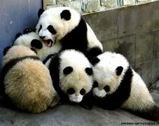

¿De que se alimentan?
¿Que son los pandas?
Los pandas son animales que viven en China y que son muy raros de ver, viven principalmente en bosques de bambú, en lo alto de las montañas del oeste de China, alimento del que subsisten casi por completo. Deben comer entre 26 y 84 libras (12 y 38 kg) de bambú cada día, una increíble labor para la cual usan los alargados huesos de sus muñecas como si fueran dedos pulgares.. Son animales muy tiernos y que se ven muy bonitos. Viven aproximadamente 20 años, su peso es de 100 kilos y su altura es de 1.50 metros.
¿Qué comen los pandas aparte de bambú?
Además de bambú (que representa un 99 % de su alimentación), el panda gigante complementa su dieta con otros vegetales, con pequeños animales que caza o pesca, con huevos y con algunos insectos
Imagenes de pandas
Haz click aquí para ver más imagenes de pandas

Datos curiosos de los Pandas
Cosas que aman los pandas:
- El bambú
- El agua
- Jugar
- Dormir


Cosas que odian los pandas:
- El calor
- La miel
- La deforestación de su hábitat
¿Por qué se encuentran en peligro de extinción?
Los pandas gigantes se encuentran en peligro de extinción debido a la deforestación de su hábitat, la destrucción de su hábitat natural, la caza furtiva y la contaminación del aire y del agua.
¿Qué podemos hacer para ayudar a los pandas?
Para ayudar a los pandas podemos hacer lo siguiente:
- Evitar la tala de árboles
- No contaminar el aire
- No contaminar el agua
- Respetar su hábitat